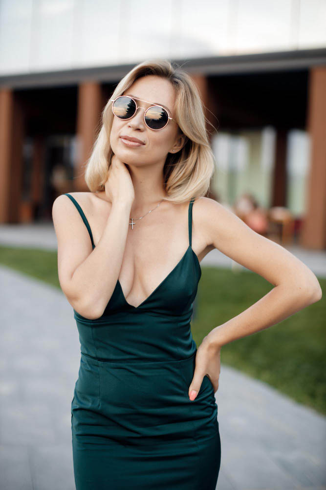

<article class="podcast-card">
  <div class="cover-container">
      
      <div class="episode-container">
        <div class="episode-badge">35</div>
        <span class="episode-name" >Episodes</span>
      </div>

    </div>

  <div class="content-container">
      <h2 class="podcast-title">Le Podcast des Arts</h2>

      <div class="presenters">
          <div class="presenter">
              
              <span class="presenter-name">Luc Wintsch</span>
          </div>
          <div class="presenter">
              
              <span class="presenter-name" >Marie Durand</span>
          </div>
      </div>
      <p class="topic">Creations</p>


  </div>
</article>
